Sales Data for Growth (SDFG) — User Manual
McKesson Canada · Version 2.1 · Data through May 2, 2026 · Last updated May 2026
Overview
The Sales Data for Growth (SDFG) tool is a sales intelligence dashboard for McKesson Canada field representatives and managers. It surfaces pharmacy-level sales signals — both growth opportunities and leakage risks — ranked by their potential dollar impact, and provides a structured worklist to track and manage rep actions.
SDFG v2.1 introduces a full action worklist alongside the six analytical views from v2.0. Every store signal can be assigned a status (Actioned, Snoozed, Not Actionable) with a reason code, and reps can move through their queue without losing their list context.
Page Layout
The dashboard is structured into four fixed zones:
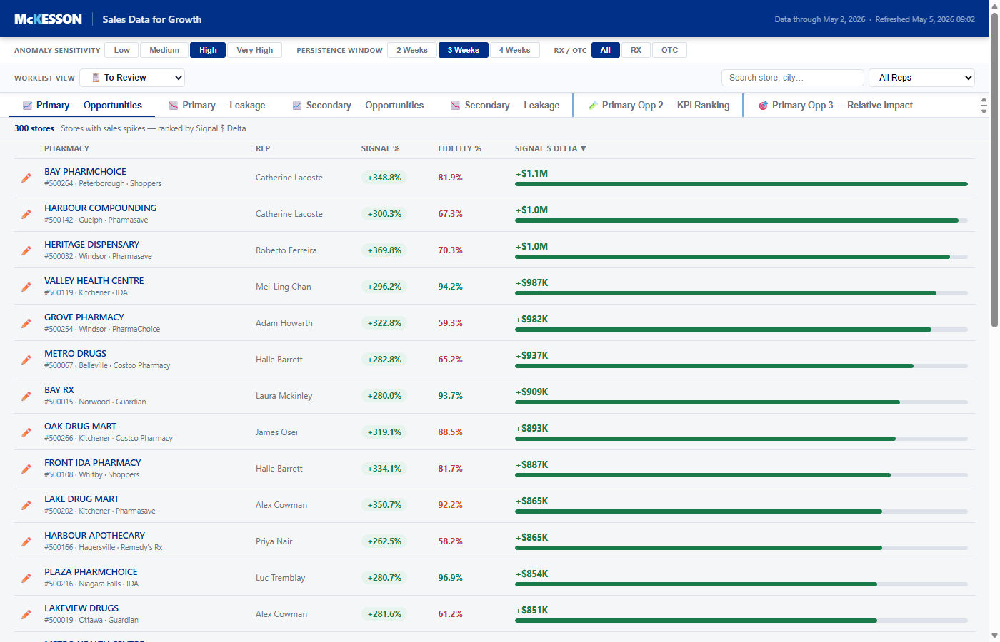
| Zone | Description |
|---|---|
| Header bar | McKesson branding, tool title, and data refresh timestamp |
| Control bar (Row 1) | Signal filters: Anomaly Sensitivity, Persistence Window, RX/OTC |
| Control bar (Row 2) | Worklist View dropdown, Search box, Rep filter |
| Tab navigation | Six analytical views (see Tabs section) |
| Store list | Ranked, filterable table of stores with signals |
| Detail panel | Slides up from the bottom when a store row is clicked |
Anomaly Sensitivity
Controls the minimum signal strength required for a store to appear in the list. A higher sensitivity setting means fewer, stronger signals; a lower setting includes more stores with smaller deviations.
| Setting | Approx. Signal % Threshold | Typical Use |
|---|---|---|
| Low | > 5% | Broad sweep — find all deviations |
| Medium | > 10% | Balanced view for regular review |
| High (default) | > 20% | Focus on material signals |
| Very High | > 35% | Only the strongest anomalies |
Persistence Window
The persistence window determines how many consecutive weeks a signal must be present before the store is flagged. Longer windows filter out one-off spikes.
| Setting | Meaning |
|---|---|
| 2 Weeks | Signal present for at least 2 consecutive weeks |
| 3 Weeks (default) | Signal present for at least 3 consecutive weeks |
| 4 Weeks | Only sustained, long-running signals |
RX / OTC Filter
Limits the store list to pharmacies with signals in the Prescription (RX) category, Over-the-Counter (OTC), or both (default: All).
Worklist View
The Worklist View dropdown is the primary way to work through your queue of store signals. Each store has an action status stored in your browser; the dropdown filters the list to show only stores in the selected bucket.
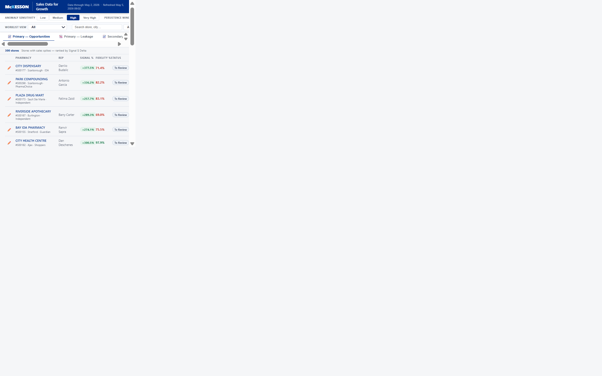
| View | Shows |
|---|---|
| 📋 To Review (default) | Stores with no action yet assigned — your daily starting point. Status column is hidden to reduce visual noise. |
| ⏳ Snoozed | Stores you have temporarily parked (snooze date still in the future) |
| ✅ Actioned | Stores where you have logged a completed action |
| 🚫 Not Actionable | Stores permanently removed from the queue with a reason |
| All | All stores regardless of status — useful for reporting and auditing |
Status badges
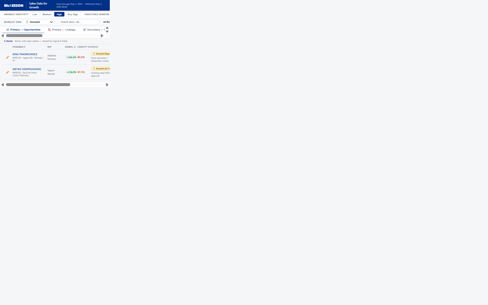
Search & Rep Filter
The Search box filters by store name or city (case-insensitive). The Rep dropdown further limits the list to a single rep's stores. Both filters work together and update the count badge instantly.
Tab: Primary — Opportunities
Shows primary pharmacies where McKesson sales are growing faster than expected based on IQVIA market data — stores to engage with quickly to lock in the opportunity.
Columns in this view:
| Column | Description |
|---|---|
| ✏️ (Pencil) | Click to open the Update Status form for this store |
| Pharmacy | Store name, ID, city, and banner |
| Rep | Assigned sales representative |
| Signal % | Percentage deviation from expected trend (colour-coded: green = positive, red = negative) |
| Fidelity % | Data completeness score — higher = more reliable signal |
| Status | Current worklist status badge + reason (hidden in To Review mode) |
| Signal $ Delta | Estimated dollar impact of the signal (default sort column) |
Tab: Primary — Leakage
Shows primary pharmacies where McKesson sales are declining relative to the market — stores at risk of losing business to competitors.
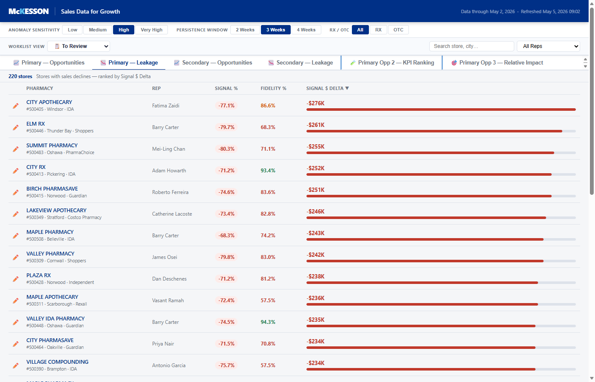
Tab: Secondary — Opportunities
Same logic as Primary Opportunities but for secondary pharmacies — stores not in the primary rep territory but still served by McKesson.
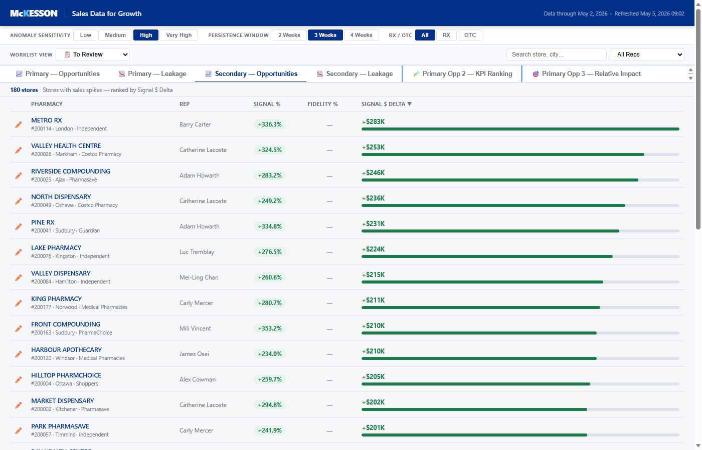
Tab: Secondary — Leakage
Leakage signals for secondary pharmacies.
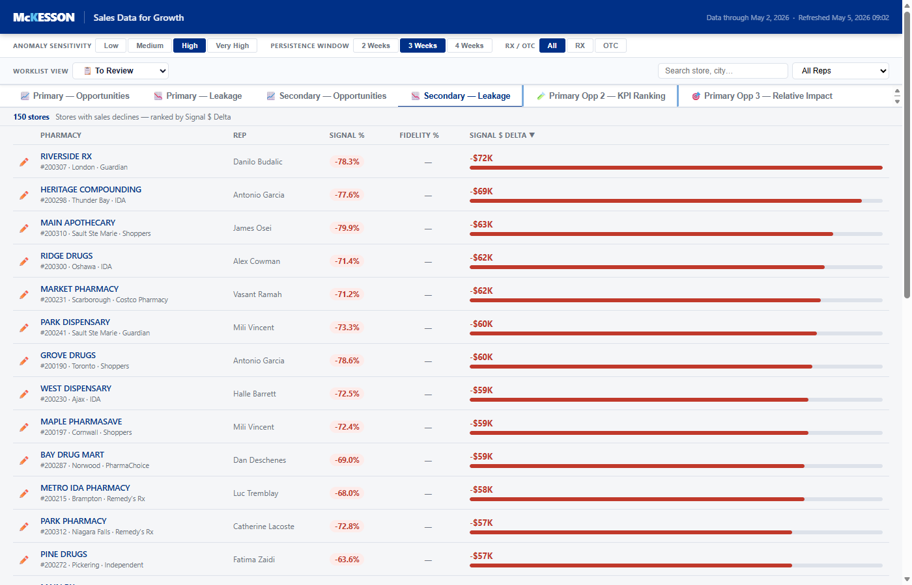
Tab: Primary Opp 2 — KPI Ranking
A multi-metric view that ranks stores by a composite of KPI signals across Direct and Indirect channels. Includes a Fidelity column split showing Direct (IQVIA), Indirect (IQVIA), and McKesson Sales (IQVIA) fidelity tiers.
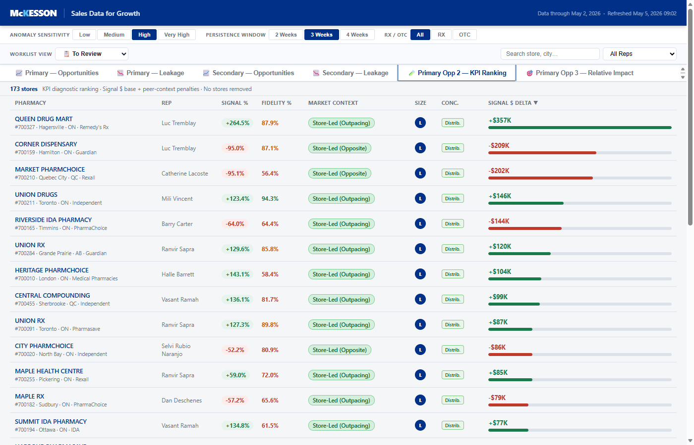
Tab: Primary Opp 3 — Relative Impact
Ranks stores by relative market share opportunity — stores where McKesson's share of the local market is significantly below peers, indicating headroom to grow.
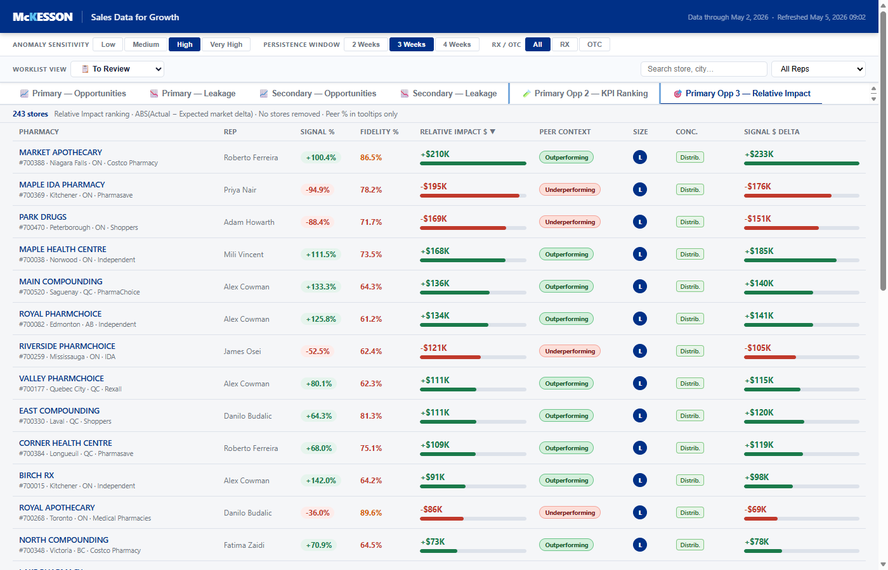
Detail Panel
Click any store row to open the detail panel at the bottom of the page. It shows:
- FY26 and FYTD sales figures with growth vs. prior year
- Fidelity score for the last month
- Last 3-week actuals (sales, signal %, signal $ delta)
- 52-week McKesson sales chart
- Signal interpretation text
- Action buttons: See Fidelity Data, Analyse Product Trend, ✏️ Update Status, Close
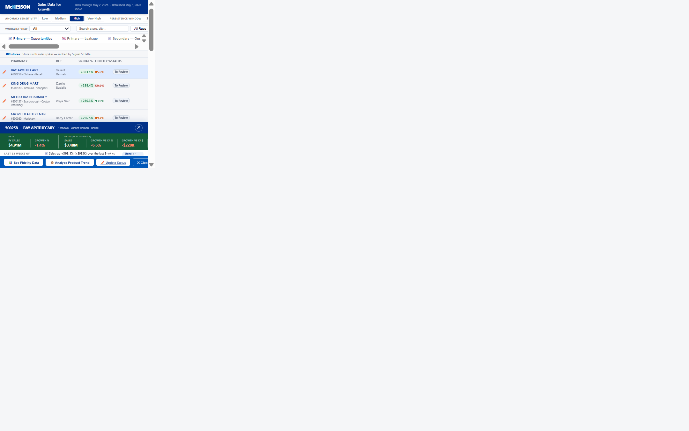
Fidelity Data
Click 📊 See Fidelity Data in the detail panel to view a 12-month trend of data completeness scores. Fidelity measures how much of the expected IQVIA data was received for that store. A score below ~85% means the signal may be noisy.
Product Trend Analysis
Click 📦 Analyse Product Trend to open a product-level breakdown panel for the selected store. This shows which products are driving the signal and compares performance to peers.
Update Status Form
The Update Status form lets you assign or change the worklist status for a specific store. Open it by clicking the ✏️ pencil icon in the table row or ✏️ Update Status in the detail panel.
Status options
| Status | When to use | Requires reason? |
|---|---|---|
| 📋 To Review | Reset a store back to the unprocessed queue | No |
| ✅ Actioned | You have taken action (call, visit, discussion) | Yes |
| 🚫 Not Actionable (Permanent) | No action possible, will not change (e.g., competitor lock) | Yes |
| ⏳ Not Actionable (Temporary / Snooze) | Temporarily park the store — re-surfaces after the snooze date | Yes + Snooze date |
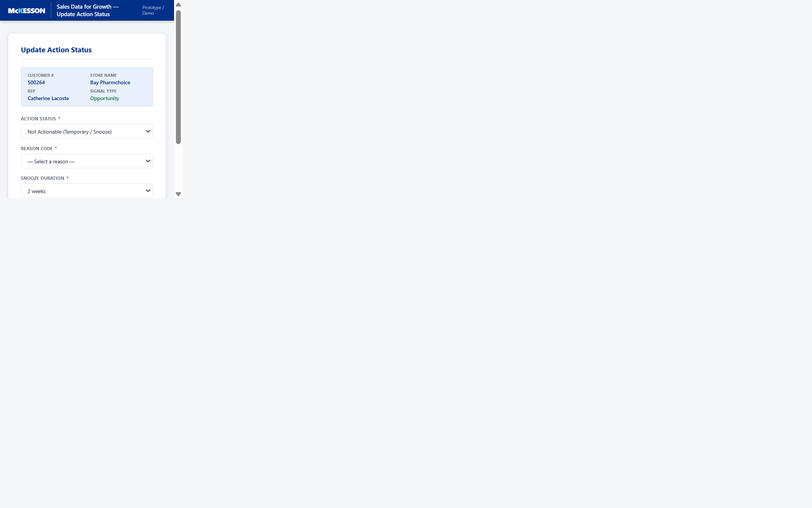
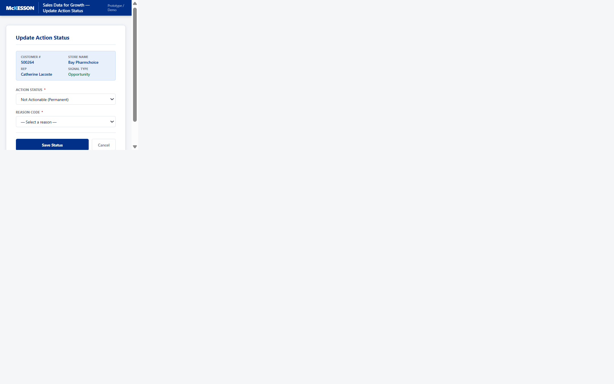
Saving and navigation
- Choose an Action Status from the dropdown
- If required, select a Reason Code (or enter free text if "Other" is chosen)
- For Snoozed status, pick a snooze duration or custom date
- Click Save Status
- You are returned to the exact same list and filter you came from — no context is lost
Recommended Worklist Workflow
A typical weekly workflow for reps:
- Open SDFG and ensure Worklist View = To Review (default)
- Review stores from top (highest $ delta) to bottom
- Click a row to see the detail panel; use ✏️ Update Status to log your action
- Stores you've actioned move out of To Review automatically
- At end of week, switch to Snoozed to check if any have expired back to To Review
- Use All view for reporting — shows full picture with all statuses
Data Refresh
The data refresh schedule and cutoff dates are shown in the header bar:
- Data through: The latest week of sales data included
- Refreshed: When the SDFG data was last processed and published
Data is typically refreshed weekly on Tuesday mornings. If signals seem absent or stale, check the refresh date in the header.
Glossary
| Term | Definition |
|---|---|
| Signal % | The percentage deviation of recent McKesson sales vs. the expected trend based on IQVIA market data |
| Signal $ Delta | The dollar value of the gap between actual and expected sales. Positive = opportunity; negative = leakage. |
| Fidelity % | Data completeness score for IQVIA data at that store. Low fidelity means the signal is less reliable. |
| Persistence Window | The number of consecutive weeks a signal must be present to be flagged |
| Anomaly Sensitivity | The minimum signal strength (%) required to appear in the list |
| Primary pharmacy | A pharmacy in the rep's primary territory |
| Secondary pharmacy | A pharmacy served by McKesson but outside the primary territory |
| Worklist | The system of action statuses (To Review / Snoozed / Actioned / Not Actionable) used to manage the queue |
| Snooze | A temporary "Not Actionable" status with an expiry date, after which the store returns to To Review |
| IQVIA | Third-party pharmaceutical market data provider used for benchmarking and fidelity scoring |
| RX | Prescription products |
| OTC | Over-the-counter (non-prescription) products |